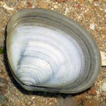
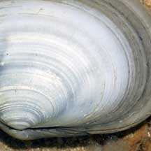
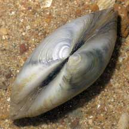
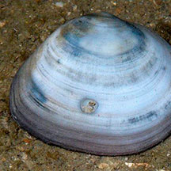

|
|
| bivalves text index | photo index |
| Phylum Mollusca > Class Bivalvia > Family Veneridae |
| White
venus clam awaiting identification* Family Veneridae updated May 2020 Where seen? This plain smooth whitish clam is sometimes seen on some of our shores, lying loose among coral rubble and under stones. Features:About 4cm. Shell thick, squarish, quite smooth with very fine ridges in concentric rings. Usually plain, mostly white with dark irregular blotches. |
 Pulau Sekudu, Mar 07 |
 |
 |
*Species are difficult to positively identify without close examination.
On this website, they are grouped by external features for convenience of display.
| White venus clams on Singapore shores |
On wildsingapore
flickr
|
| Other sightings on Singapore shores |
 Pulau Hantu, May 09 Photo shared by Loh Kok Sheng on flickr. |